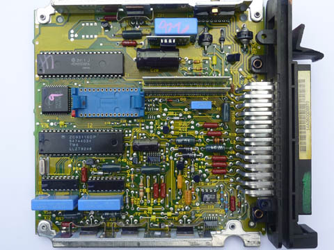

Aug 2015 - Latest
TVR Proms based on Land
Rover’s final revision plus a hot start fix that allows you to lower your base
idle (set on the plenum) to lower the starting idle & lingering idle while
slowing down. The 430 version also contains
a tweak for overrun pops and bangs. Please see below for further information regarding
revision R3652 and extending the fuel table. Enjoy.
TVR
400 Precat and 400 CAT based on LR R3652
TVR
400 Precat and 400 CAT based on LR R3652 with Extended Fuel Table to 6250RPM
TVR
430 Precat and 450 CAT based on LR R3652 with Extended Fuel Table to 6250RPM
|
During the life of the 14CUX Lucas constantly issued
software program updates plus fuel data updates from tune/map R2103 in 1990
to tune/map R3654 in 1995. These updates included enhancements &
improvements to the computer program code plus fuel data changes for the
different engine specifications. The software program and the fuel data are
both stored together on the same chip and are jointly know as tunes. The
physical chip is an EPROM (27C256) that stands for Erasable Programmable Read
Only Memory and can only be erased with an UV lamp, I prefer to use EEPROM
(28C256) as they can be quickly & electrically erased unlike EPROM and are
100% compatible. |
14CUX with Firmware Eject Socket  |
All TVR tunes/maps use one of two different software program
versions R2422 and R2967. Precat 400 & 430 Griffith both run the R2422
software, which is exactly the same software program version as Land Rover's
1990 version R2422 but obviously with different fuel data. All catalyst
equipped TVR’s from 1993 on including all 400’s to 500’s run the specially
modified software version for TVR called version R2967 that is similar to Land
Rovers 1994 UK program version R3383 but less an A/C enhancement. Once TVR’s software
program branched away from Land Rover’s software program base TVR didn’t then
go back and incorporate Land Rover's 1995 final refinements in versions R3652
to R3654 called Operation Pride. As a result I decided to build a few tunes so
TVR owners can take advantage of Land Rovers final R3652 version Operation
Prides.
Land Rover & TVR OEM Tune Firmware Files
First here are some Land Rover & TVR OEM tunes / maps / firmware files free
to download and ready to flash to a standard 27C256 EPROM or an 28C256
electrically erasable/reusable FLASH/EEPROM. They are direct copies of Land
Rover & TVR factory firmware chips and the TVR ones could be used to
convert a Land Rover 14CUX to TVR spec. When buying a Land Rover ECU be careful
as not all 14CUXs have the tune chip on a socket and therefore the chip will
have to be de-soldered and replaced with a socket.
Land Rover OEM Tune filesLand
Rover R2242 3.9 1991 UK
CO Trim for Precat vehiclesPrecat owners wishing to change firmware revision may have to adjust the CO trim screw on the AFM with a 7/32 Allen Key. The Co Trim voltage should 2.3 volts for a 4.3 running it’s original factory ECU and 1.4 volts when running TVR’s later code R2967 or Land Rovers final code R3652. R2967 & R3652 idle AFR (4.3L)Clockwise increases volts & fuel
|
TVR OEM Tune
Files TVR
Griffith 400 & 400HC Precat (R2422) TVR Chimaera 430BV CAT (R2967) TVR
Chimaera 450 CAT (R2967) 14CUX AFM CO Trim Screw with 7/32 Allen key RoverGauge shows the CO trim voltage for non cat vehicles in real time but you first have to start and stall the engine before RoverGauge displays any adjustment of the CO trim screw. Please make a note of your CO trim voltage before making any adjustments so you can revert back if required. The CO trim voltage & AFR table on the left was created by turning the CO Trim screw in half turn increments clockwise which increases the CO trim voltage and fuel. For all Precats 13.5 AFR is best for smoothness and reduces shunting. |
R2967 - TVR’s Later Griffith 500 Software program but for
Precats
In the following tunes I've merged TVR's R2967 later/special software program
with Precat fuel data so precat owners can take advantage of TVR's later
software for the Griffith 500 but with original and standard precat fuel data.
These tunes also contain the fuel data for catalyst equipped cars and therefore
the 400 version is compatible with all 400's with or without cats. Precat
owners should notice idle and slow speed smoothness improvements and I noticed
a reduction of overrun shunting with my Precat 430. Please note the biggest
factor in reducing shunting on a precat is setting the CO trim correctly.
TVR
Griffith 400 Precat & TVR Chimmaera 400 CAT combined in later TVR R2967
TVR
Griffith 430 Precat & TVR Chimmaera 450 CAT combined in later TVR R2967
R3652 - Land Rover's final program version but for TVR owners
Land Rover’s final software version contained further improvements especially
to idle control, therefore I've prepared two R3652 for TVR owners with standard
precat fuel data, but please set your CO trim to 1.4volts as describe above. I've
already had positive feed back from two very happy owner who said “I’m
impressed version R3652 is much smoother and is what I’ve always been looking
for”. Also, with this revision ‘R3652’ the MIL light gives a reassuring flash
each time the ignition is turned on. As this is a Land Rover version I've
removed the road speed limiter correctly in the program code as TVR did in it's
own R2967 version as oppose to original Precat's have a road speed limiter work
around in the data that is not ideal plus it doesn't limit the road speed below
4,100 RPMs.
TVR
Griffith 400 Precat & TVR Chimmaera 400 CAT combined in Land Rovers final
revision R3652
TVR
Griffith 430 Precat & TVR Chimmaera 450 CAT combined in Land Rover final
revision R3652
Extended Fuel Table to 6,200 RPM for 4.3 Precats
|
These next two tunes contain an extended fuel table to 6,200 RPMs that I’ve proved on the Griff Growl rolling road in 2014 resolve the fuelling issues at high rpm. The R2967 4.3 version is the exact version I ran on the Growl rolling road and continued running for the rest of the summer unaltered. The R3652 below also contains the extended fuel table plus raised enabled overrun fuelling and also has a balance of overrun smoothness and overrun popping for maps 2 and 5 (cat and not cat). You need a rich mixture for smoothness and lean for overrun popping, therefore below 1,400rpm I’ve set the fuelling to 13.5:1 AFR for smoothness and reduced the fuelling above 1,750rpm to 20:1 AFR to increase the sound track. |
Remapped with extended Fuel
Table in Blue |
In addition Map 1’s CO Trim is locked in the mid point but doesn’t contain the leaner overrun to induce popping and Map3 contains a richer top row for the smoothest possible overrun. I’m sure you realise to run these two maps you’ll have to change your tune resistor.
Please be warned for both of these extended tunes I haven't
remapped all the cells effected by the fuel table extension and therefore this
may not suit every 4.3 application, for example BV's. The fuel table could do
with a tidy up especially the unused cells and therefore I strongly suggest you
check it yourself on a rolling road before running it regularly. The main point
is we now have an extended fuel table for everyone to start working with.
TVR
Griffith 430 Precat & TVR 450 CAT with modified & extended fuel table
to 6200 RPM in later TVR R2967
TVR
Griffith 430 Precat & TVR 450 CAT with modified & extended fuel table
to 6200 RPM in later Land Rover R3652
Tune build files (Requires Dan's rebuild project V2)
Please don't worry about these files unless you are using Dan's rebuild
project.
14CUX source code & rebuild fuel maps project, courtesy of
Dan
Rebuild
file for TVR Griffith 400 Precat & TVR Chimmaera 400 CAT combined in later
TVR R2967
Rebuild
file for TVR Griffith 400 Precat & TVR Chimmaera 400 CAT combined in later
Land Rover R3652
Rebuild
file for TVR Griffith 430 Precat & TVR Chimmaera 450 CAT combined in later
Land Rover R3652
Rebuild
file for TVR Griffith 430 Precat & TVR 450 CAT with modified & extended
fuel table to 6200 RPM in later Land Rover R3652
Rebuild
files for TVR R2967 4.3 PreCat
14CUX
RpmTable
Hex
Editor
Should you have any questions or suggestions to improve any of these tunes/maps
please do not hesitate to email me via my SteveSprint
PistonHeads profile, but please remember I’m not in the motor trade nor
computer industry and I’m doing this for fun in my limited spare time.
Finally, always keep your original chip in a safe place as a fallback and always work on a spare EEPROM chip and I’m sorry there is absolutely no warranty.
{kind=link}
{kind=link}